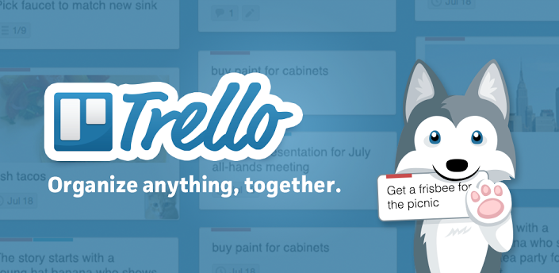
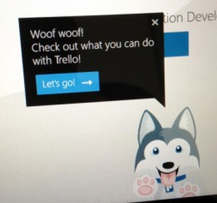

TrelloTM is a free web-based project management application originally made by Fog Creek Software in 2011, that spun out to be its own company in 2014.
According to TrelloTM, it uses a paradigm for managing projects known as kanban, a method that had originally been popularized by Toyota in the 1980s for supply chain management. Projects are represented by boards, which contain lists (corresponding to task lists). Lists contain cards (corresponding to tasks). Cards are supposed to progress from one list to the next (via drag-and-drop), for instance mirroring the flow of a feature from idea to implementation. Users can be assigned to cards. Users and boards can be grouped into organizations.
According to TrelloTM, it operates a freemium business model, as well as being cross-subsidized by other Fog Creek Software products. A basic service is provided free of charge, though a Business Class paid-for service was launched in 2013.
In 2014 TrelloTM raised $10.3 million in funding from Index Ventures and Spark Capital.

It supports iPhone,Android and Windows 8 mobile platforms, however, its website has been designed to be accessible in most mobile web browsers. An iPad application was released on March 12, 2013. It added support for an unlimited number of tags, in the form of colored labels that can be renamed and new ones created, starting November 21, 2014. Cards accept comments, attachments, votes, due dates and checklists. TrelloTM has an API. Users may organize projects through the utilization of boards, lists and cards, which form a bespoke data hierarchy that facilitates effective management of projects, jobs and tasks.
TrelloTM was released at a TechCrunch event by Fog Creek founder Joel Spolsky. Wired magazine named the application in September 2011 one of "The 7 Coolest Startups You Haven´t Heard of Yet". Lifehacker said "it makes project collaboration simple and kind of enjoyable".

According to TrelloTM, in July 2012 the site surpassed 500,000 users. They then claimed December 2012, it had surpassed 1,000,000 and in May 7, 2014 claimed the number to be four million. On September 18, 2014 TrelloTM reached over five million users.
TrelloTM has a variety of work and personal uses including real estate management, software project management, school bulletin boards, lesson planning, and law office case management. A rich API as well as email-in capability enables integration with enterprise systems, or with cloud-based integration services like IFTTT and Zapier.